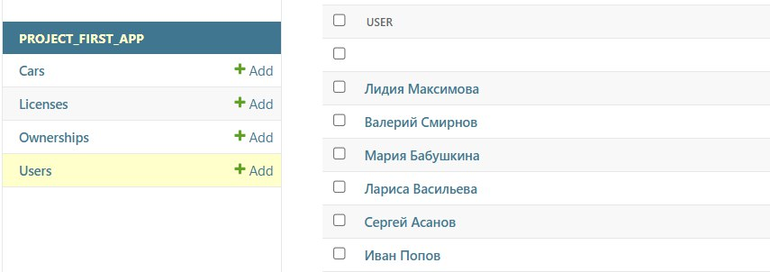
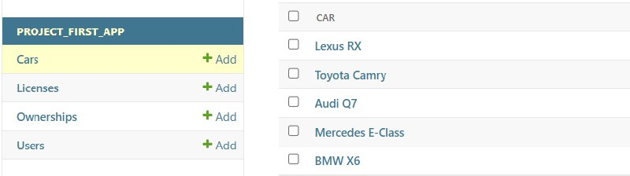
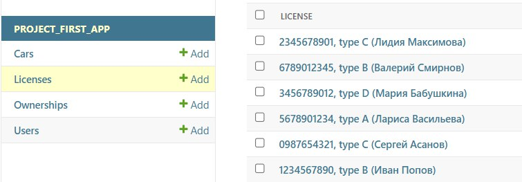
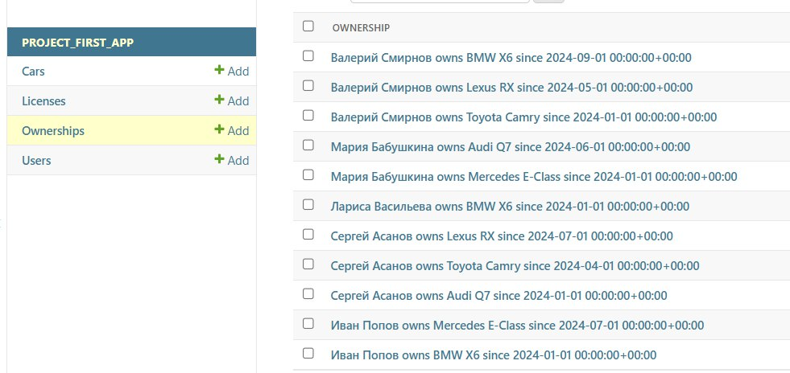

Практическое задание 3.1
Django Web Framework. Запросы и их выполнение
Задание
1. Создание объектов
Воспользуйтесь проектом из практики 2.1. Напишите запросы для создания: - 6–7 новых автовладельцев. - 5–6 автомобилей.
Каждому автовладельцу необходимо назначить удостоверение и от 1 до 3 автомобилей. Задание можно выполнить в интерактивном режиме интерпретатора или в отдельном Python-файле. Результатом должны стать запросы и отображение созданных объектов.
2. Написать запросы на фильтрацию
- Выведете все машины марки “Toyota” (или любой другой марки, которая у вас есть)
- Найти всех водителей с именем “Олег” (или любым другим именем на ваше усмотрение)
- Взяв любого случайного владельца получить его id, и по этому id получить экземпляр удостоверения в виде объекта модели (можно в 2 запроса)
- Вывести всех владельцев красных машин (или любого другого цвета, который у вас присутствует)
- Найти всех владельцев, чей год владения машиной начинается с 2010 (или любой другой год, который присутствует у вас в базе)
3. Написать запросы на агрегацию
- Вывод даты выдачи самого старшего водительского удостоверения
- Укажите самую позднюю дату владения машиной, имеющую какую-то из существующих моделей в вашей базе
- Выведите количество машин для каждого водителя
- Подсчитайте количество машин каждой марки
- Отсортируйте всех автовладельцев по дате выдачи удостоверения
Создание объектов
1. Создание автовладельцев
from project_first_app.models import User
owner1 = User(passport=123457, first_name="Иван", last_name="Попов")
owner2 = User(passport=436576, first_name="Сергей", last_name="Асанов")
owner3 = User(passport=465776, first_name="Лариса", last_name="Васильева")
owner4 = User(passport=242455, first_name="Мария", last_name="Бабушкина")
owner5 = User(passport=786855, first_name="Валерий", last_name="Смирнов")
owner6 = User(passport=456464, first_name="Лидия", last_name="Максимова")
owner1.save()
owner2.save()
owner3.save()
owner4.save()
owner5.save()
owner6.save()
2. Создание автомобилей
from project_first_app.models import Car
car1 = Car(state_number="K345OP", brand="BMW", model="X6", color="black")
car2 = Car(state_number="A123BC", brand="Mercedes", model="E-Class", color="white")
car3 = Car(state_number="M789TT", brand="Audi", model="Q7", color="blue")
car4 = Car(state_number="H567XY", brand="Toyota", model="Camry", color="gray")
car5 = Car(state_number="P234KT", brand="Lexus", model="RX", color="red")
car1.save()
car2.save()
car3.save()
car4.save()
car5.save()
3. Назначение автомобилей владельцам
from project_first_app.models import Ownership
from django.utils.timezone import make_aware
from datetime import datetime
Ownership(owner=owner1, car=car1, start_date=make_aware(datetime(2024, 1, 1)), end_date=None).save()
Ownership(owner=owner1, car=car2, start_date=make_aware(datetime(2024, 7, 1)), end_date=None).save()
Ownership(owner=owner2, car=car3, start_date=make_aware(datetime(2024, 1, 1)), end_date=make_aware(datetime(2024, 3, 31))).save()
Ownership(owner=owner2, car=car4, start_date=make_aware(datetime(2024, 4, 1)), end_date=make_aware(datetime(2024, 6, 30))).save()
Ownership(owner=owner2, car=car5, start_date=make_aware(datetime(2024, 7, 1)), end_date=None).save()
Ownership(owner=owner3, car=car1, start_date=make_aware(datetime(2024, 1, 1)), end_date=None).save()
Ownership(owner=owner4, car=car2, start_date=make_aware(datetime(2024, 1, 1)), end_date=make_aware(datetime(2024, 5, 31))).save()
Ownership(owner=owner4, car=car3, start_date=make_aware(datetime(2024, 6, 1)), end_date=None).save()
Ownership(owner=owner5, car=car4, start_date=make_aware(datetime(2024, 1, 1)), end_date=make_aware(datetime(2024, 4, 30))).save()
Ownership(owner=owner5, car=car5, start_date=make_aware(datetime(2024, 5, 1)), end_date=make_aware(datetime(2024, 8, 31))).save()
Ownership(owner=owner5, car=car1, start_date=make_aware(datetime(2024, 9, 1)), end_date=None).save()
4. Назначение удостоверений
from project_first_app.models import License
License(owner=owner1, license_number="1234567890", license_type="B", issue_date=make_aware(datetime(2020, 1, 1))).save()
License(owner=owner2, license_number="0987654321", license_type="C", issue_date=make_aware(datetime(2019, 5, 15))).save()
License(owner=owner3, license_number="5678901234", license_type="A", issue_date=make_aware(datetime(2018, 3, 10))).save()
License(owner=owner4, license_number="3456789012", license_type="D", issue_date=make_aware(datetime(2021, 7, 20))).save()
License(owner=owner5, license_number="6789012345", license_type="B", issue_date=make_aware(datetime(2022, 11, 5))).save()
License(owner=owner6, license_number="2345678901", license_type="C", issue_date=make_aware(datetime(2023, 4, 1))).save()
users

cars

licenses

ownerships

Написание запросов на фильтрацию
1. Выведете все машины марки “Toyota” (или любой другой марки, которая у вас есть)
>>> toyota_cars = Car.objects.filter(brand="Toyota")
>>> toyota_cars
<QuerySet [<Car: Toyota Camry>]>
2. Найти всех водителей с именем “Олег” (или любым другим именем на ваше усмотрение)
>>> serg_drivers = User.objects.filter(first_name="Сергей")
>>> serg_drivers
<QuerySet [<User: Сергей Асанов>]>
3. Взяв любого случайного владельца получить его id, и по этому id получить экземпляр удостоверения в виде объекта модели (можно в 2 запроса)
>>> random_owner = User.objects.get(passport=123457)
>>> license_for_owner = License.objects.get(owner=random_owner)
>>> license_for_owner
<License: 1234567890, type B (<bound method User.__str__ of <User: Иван Попов>>)>
4. Вывести всех владельцев красных машин (или любого другого цвета, который у вас присутствует)
>>> User.objects.filter(ownership__car__color="red").distinct()
<QuerySet [<User: Сергей Асанов>, <User: Валерий Смирнов>]>
5. Найти всех владельцев, чей год владения машиной начинается с 2010 (или любой другой год, который присутствует у вас в базе)
>>> User.objects.filter(ownership__start_date__year=2024, ownership__end_date=None).distinct()
<QuerySet [<User: Иван Попов>, <User: Сергей Асанов>, <User: Лариса Васильева>, <User: Мария Бабушкина>, <User: Валерий Смирнов>]>
Написание запросов на агрегацию
1. Вывод даты выдачи самого старшего водительского удостоверения
Вывод даты выдачи самого старшего водительского удостоверения: Для этого мы можем использовать метод aggregate() для нахождения минимальной даты из всех удостоверений.
>>> from django.db.models import Min
>>> oldest_license = License.objects.aggregate(oldest_license_date=Min('issue_date'))
>>> print(oldest_license['oldest_license_date'])
2018-03-10 00:00:00+00:00
2. Укажите самую позднюю дату владения машиной, имеющую какую-то из существующих моделей в вашей базе
Здесь мы можем воспользоваться методом aggregate() для поиска самой поздней даты начала владения машины.
>>> from django.db.models import Max>>>
>>> latest_ownership_date = Ownership.objects.aggregate(latest_date=Max('start_date'))
>>> print(latest_ownership_date['latest_date'])
2024-09-01 00:00:00+00:00
3. Выведите количество машин для каждого водителя
Для подсчета количества машин, принадлежащих каждому водителю, можно использовать annotate() с функцией Count.
>>> from django.db.models import Count
>>> car_count_per_owner = User.objects.annotate(car_count=Count('ownership'))
>>> for user in car_count_per_owner:
... print(f"{user.first_name} {user.last_name}: {user.car_count}")
...
Иван Попов: 2
Мария Бабушкина: 2Сергей Асанов: 3
Лидия Максимова: 0Лариса Васильева: 1
Валерий Смирнов: 3
4. Подсчитайте количество машин каждой марки
Для подсчета машин по маркам можно использовать values() с группировкой по марке и annotate() для подсчета
>>> cars_by_brand = Car.objects.values('brand').annotate(Count("id"))
>>> cars_by_brand
<QuerySet [{'brand': 'Audi', 'id__count': 1}, {'brand': 'BMW', 'id__count': 1}, {'brand': 'Lexus', 'id__count': 1}, {'brand': 'Mercedes', 'id__count': 1}, {'brand': 'Toyota', 'id__count': 1}]>
5. Отсортируйте всех автовладельцев по дате выдачи удостоверения
>>> User.objects.filter(license__isnull=False).distinct().order_by('license__issue_date')
<QuerySet [<User: Лариса Васильева>, <User: Сергей Асанов>, <User: Иван Попов>, <User: Мария Бабушкина>, <User: Валерий Смирнов>, <User: Лидия Максимова>]>